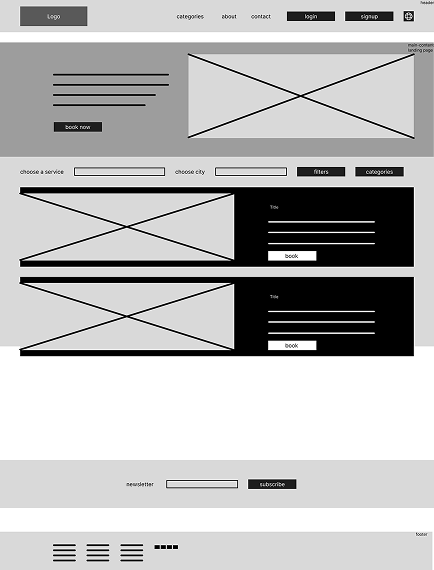

ServiceHub
A Platform for Finding and Booking Local Services
TServiceHub is a digital platform designed to make finding and booking local services simple and convenient. It connects customers with trusted service providers, helping them compare prices, read reviews, and book services in one place. The platform focuses on saving time, improving transparency, and making it easier for people to find the right professionals for their needs.
Problem
Finding the right local service provider often requires searching through multiple websites and social media platforms. Customers may find it difficult to compare prices, check availability, and trust reviews. At the same time, service providers can struggle to attract new customers and manage their services efficiently.
Solution
ServiceHub is a web platform that connects customers with trusted local service providers in one place. Users can easily search for services, compare prices, read reviews, check availability, and book appointments online. Service providers can create profiles, showcase their services, manage bookings, and connect with potential customers.
Pain Points
Finding reliable service providers can be difficult and time-consuming. Customers often struggle with unclear pricing, insufficient reviews, and information scattered across different platforms. Communication can be slow, availability is not always clear, and comparing providers can be challenging. These issues make it harder for customers to find trustworthy professionals nearby.
Competitor Analysis
ServiceHub aims to solve these problems by bringing service discovery, provider profiles, reviews, pricing, availability, and online booking together in one user-friendly platform. It offers a more convenient and transparent experience for customers while helping service providers reach new clients and grow their businesses.
Goals
The main goal of ServiceHub is to make finding and booking local services easier, faster, and more reliable. The platform helps users discover trusted professionals, compare prices and reviews, save time, and access clear information before making a booking..
Key Features
- ServiceHub includes a service search with category and location filters, allowing users to find providers nearby. Provider profiles display services, prices, reviews, and ratings to help customers make informed decisions. The platform also offers online booking, booking notifications, price comparison, and a favorites section for saving preferred providers. In addition, direct messaging makes communication easier, while the provider dashboard helps professionals manage their services, bookings, and customers.
Wireframe
